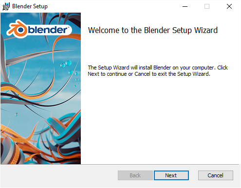

在 MS Windows 上安装¶
Check the minimum requirements and where to get Blender, if you have not done so yet.
您还需要 Visual c + + 2013年可再发行组件包.
Download the .zip or .msi for your architecture (64-bit is preferable if your machine supports it).
The .msi will run an installer to choose where to place Blender
and to configure MS-Windows to have an entry on the menu and to open .blend-files with Blender.
Administrator rights are needed to install Blender on your system.

MS-Windows installer.
注解
.zip 后缀的文件需要你手动的复制和解压Blender到指定的文件夹下面，然后双击就Blender可以执行文件就可以打开运行Blender了。
开始菜单不会有Blender的东西，但是这种方法可以不需要管理员权限。这种方式可以让我们有很多个版本的Blender同时在电脑里而且不产生冲突，因为它们都没有安装在系统上。
However, if you want a particular version to be registered with your computer the simply run blender -r
from the Command Line.